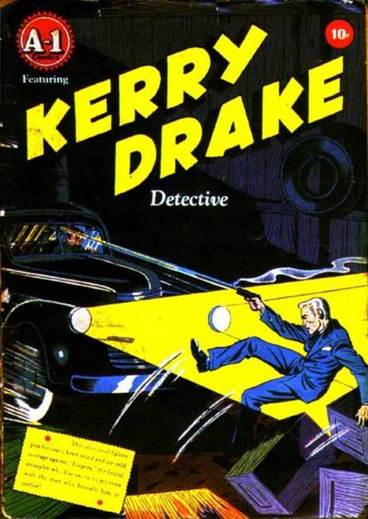

Magazine Enterprises was an American comic book company lasting from 1943 to 1958, which published primarily Western, humor, crime, adventure, and children's comics, with virtually no superheroes. It was founded by Vin Sullivan, an editor at Columbia Comics and before that the editor at National Allied Publications, the future DC Comics.
Magazine Enterprises' characters include the jungle goddess Cave Girl, drawn by Bob Powell, and Ghost Rider, a horror fiction-themed Western avenger created by writer Ray Krank and artist Dick Ayers in 1949; after the trademark lapsed, Ayers and others adapted it as Marvel Comics' non-horror but otherwise near-identical Western character Ghost Rider in 1967.
Titles
A-1 Comics
Adventures of Robin Hood (1957)
Africa
American Air Forces
Avenger
Badmen of the West! (1953)
Best of the West (1951)
Black Phantom (1954)
Bobby Benson's B-Bar-B Riders (1950)
Brain
Cave Girl
Clubhouse Rascals
Cowboys 'N' Injuns/Cowboys and Indians (1946)
Dan'l Boone
Dick Powell a.k.a. Star Parade Presents Dick Powell
Ding Dong
Dogface Dooley
Dotty Dripple
Dream Book of Love
Dream Book of Romance
Durango Kid (1949)
Extra Comics
Funnyman
Ghost Rider (1950)
Great Western (1953)
Guns of Fact and Fiction (1948)
Hot Dog
I'm A Cop
Jet Powers[8]
Jimmy Durante Comics
Keen Teens
Kerry Drake Detective Cases
Killers
Koko and Kola
Little Miss Sunbeam Comics
Major Inapak the Space Ace
Manhunt
Mighty Atom
Mighty Atom and the Pixies
Movie Thrillers
Muggsy Mouse (1951)
Mysteries of Scotland Yard
Pixies
Pride of the Yankees
Red Hawk (1953)
Red Mask (1954)
Robin Hood (1955)
Romantic Picture Novellettes
Straight Arrow (1950–1956)
Straight Arrow's Fury (1954)
Strong Man
Thun'da
Tick Tock Tales
Tim Holt (1948)
Tom-Tom and Itchi the Monk
Tom-Tom, The Jungle Boy
Trail Colt (1949)
Undercover Girl
United States Marines
Vacation Comics
White Indian (1953)